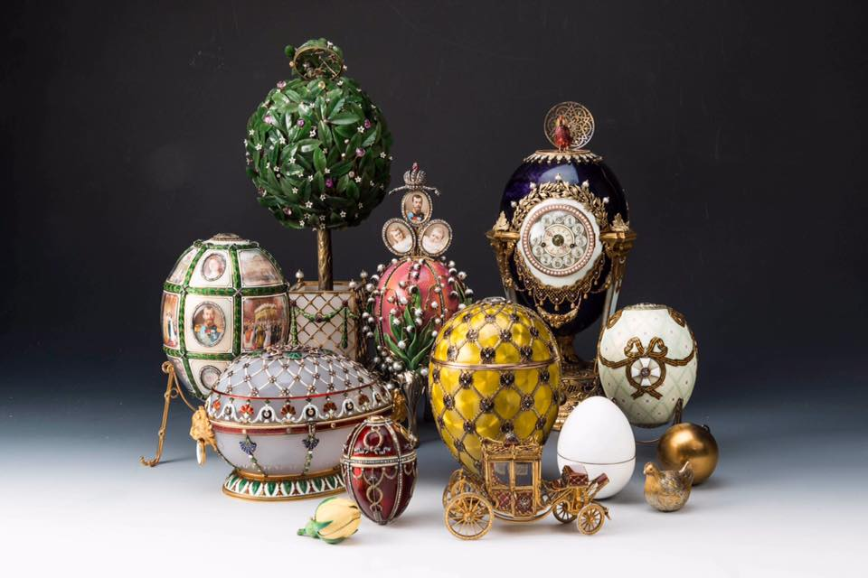

The museum is located in the center of Saint Petersburg at Shuvalov Palace (21, Fontanka River Embankment) on the Fontanka River.
- «First Hen» - is the first in a series of more than 50 such jeweled eggs made for the Russian Imperial family. It was delivered to Tsar Alexander III and given to his wife Maria Feodorovna in 1885. The tsarina enjoyed the egg so much that Alexander III quickly placed a standing order with Fabergé to create a new egg for his wife every Easter thereafter, requiring only that each egg be unique and that it contain some kind of "surprise" within it.
- «Renaissance egg» - the egg was made for Alexander III of Russia, who presented it to his wife, the Empress Maria Feodorovna. It was the last egg that Alexander presented to Maria.
- «Rosebud egg» - is a jewelled enameled Easter egg made by Michael Perchin under the supervision of the Russian jeweller Peter Carl Fabergé in 1895,[1] for Nicholas II of Russia, who presented the egg to his wife, Empress Alexandra Feodorovna. It was the first egg that Nicholas presented to Alexandra.
- «The Imperial Coronation egg» - s a jewelled Fabergé egg made under the supervision of the Russian jeweller Peter Carl Fabergé in 1897 by Fabergé ateliers, Mikhail Perkhin and Henrik Wigstrom.The coronation of Tsar Nicholas II and his spouse, Empress Alexandra Fyodorovna was the catalyst for the Imperial Coronation Egg's creation, to celebrate the historical event. The coronation on May 14, 1896, was a day of jubilance and pride in the Romanovs, celebrated by throngs of spectators.
- «Lilies of the Valley egg» - is one of the two eggs in the Art Nouveau style (the other is the Pansy Egg). It was presented on April 5 to Tsar Nicholas II, who gave it as a gift to his wife, the Tsarina, Empress Alexandra Fyodorovna.
- «Cockerel egg» - was given in 1900 by Tsar Nicholas II to Empress Maria Feodoronova as a gift. The egg has a mechanism on the top rear that enables its bird to come out and move.
- «The Fifteenth Anniversary egg» - it was an Easter 1911 gift for Tsaritsa Alexandra Feodorovna from her husband Tsar Nicholas II, who had a standing order of two Fabergé Easter eggs every year, one for his mother and one for his wife.
- «Bay Tree egg» - is a jewelled nephrite and enameled Easter egg made under the supervision of the Russian jeweller Peter Carl Fabergé in 1911, for Nicholas II of Russia who presented the egg to his mother, the Dowager Empress Maria Feodorovna, on 12 April 1911.
- «Order of St. George Egg,» - is an enameled Easter egg made under the supervision of the Russian jeweller Peter Carl Fabergé in 1916,[1] for Nicholas II of Russia, who presented the egg to his mother, the Dowager Empress Maria Feodorovna.This was the last egg that the Dowager Empress received, as the Karelian Birch egg that was intended for her never reached her.
- «Order of St. George Egg,» - is an enameled Easter egg made under the supervision of the Russian jeweller Peter Carl Fabergé in 1916, for Nicholas II of Russia, who presented the egg to his mother, the Dowager Empress Maria Feodorovna.This was the last egg that the Dowager Empress received, as the Karelian Birch egg that was intended for her never reached her.